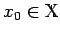
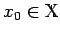
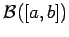
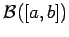

Inhalt Index DeskTop Bronstein

 Funktionalanalysis Metrische Räume Begriff des metrischen Raumes
Funktionalanalysis Metrische Räume Begriff des metrischen Raumes


Seien  ein metrischer Raum,  ein Punkt und eine Folge von Elementen in
ein metrischer Raum,  ein Punkt und eine Folge von Elementen in  .
.
Die Folge  heißt zum Punkt x0 konvergent, wenn es zu jeder Umgebung U(x0) einen Index n0=n0(U) gibt, so daß die Beziehung gilt. Man schreibt für diesen Sachverhalt gewöhnlich
heißt zum Punkt x0 konvergent, wenn es zu jeder Umgebung U(x0) einen Index n0=n0(U) gibt, so daß die Beziehung gilt. Man schreibt für diesen Sachverhalt gewöhnlich
und nennt x0 den Grenzwert der Folge . Der Grenzwert einer Folge ist eindeutig bestimmt. Anstelle einer beliebigen (allgemeinen) Umgebung des Punktes x0 genügt es, lediglich offene Kugeln mit beliebig kleinem Radius heranzuziehen, so daß (12.53) äquivalent zu Folgendem ist: Für (man hat dabei sofort die offene Kugel im Sinn) gibt es einen Index , so daß die Ungleichung gilt. Damit bedeutet (12.53) genau .
Mit den eingeführten Begriffen hat man die Möglichkeit, in konkreten metrischen Räumen den Abstand zwischen zwei Punkten anzugeben und die Konvergenz von Punktfolgen zu untersuchen, was etwa bei numerischen Verfahren oder bei der Approximation von Funktionen durch solche einer bestimmten Klasse (s. etwa Approximation und Ausgleichsrechnung) von Bedeutung ist. Im Raum  erweist sich die mittels einer der angegebenen Metriken festgelegte Konvergenz gerade als die koordinatenweise Konvergenz. In den Räumen  und
erweist sich die mittels einer der angegebenen Metriken festgelegte Konvergenz gerade als die koordinatenweise Konvergenz. In den Räumen  und  ist die durch (12.47) eingeführte Konvergenz genau die gleichmäßige Konvergenz der Funktionenfolge auf der Menge
ist die durch (12.47) eingeführte Konvergenz genau die gleichmäßige Konvergenz der Funktionenfolge auf der Menge  . Im Raum ergibt sich die Konvergenz im (quadratischen) Mittel, d.h.
. Im Raum ergibt sich die Konvergenz im (quadratischen) Mittel, d.h.  genau dann, wenn
genau dann, wenn
| (12.54) |